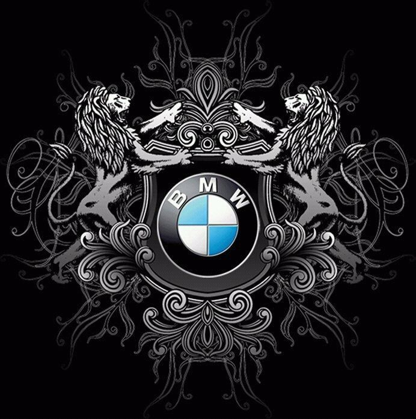

Що таке BMW?
Bayerische Motoren Werke AG або скор. BMW (Баварські автомобільні заводи, БМВ; вимовляється: Бе́-еМ-Ве́) — німецький автобудівний та авіамоторний концерн і однойменна торгова марка автомобілів преміум- та люкс-класу і мотоциклів. Концерн є материнською фірмою (холдингом) об'єднання BMW Group, до якого входять такі окремі виробництва: мотоцикли BMW, автомобілі марок BMW, Rolls-Royce, MINI, дочірні виробництва BMW M, BMW i.
У списку найбільших публічних компаній світу Forbes Global 2000 за 2022 рік BMW Group посіла 64-е місце, а в списку Fortune Global 500 — 59-те місце.
